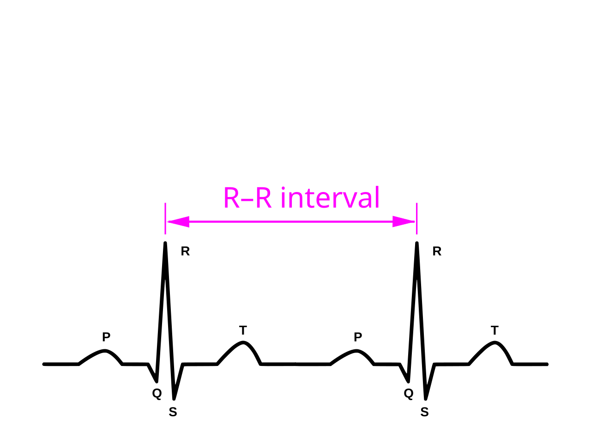

Nếu nhịp tim nghỉ của bạn là 60 nhịp/phút (bpm), rất dễ lầm tưởng rằng trái tim đập chính xác mỗi 1.000 giây một lần giống như đồng hồ thạch anh. Trên thực tế, một trái tim con người khỏe mạnh không bao giờ đập cứng nhắc như máy móc.
HRV mô tả sự thay đổi khoảng thời gian giữa các nhịp tim, không phải nhịp tim trung bình. Chỉ số phụ thuộc tuổi, tư thế, hô hấp, thời điểm và phương pháp đo. Giá trị RMSSD ban đêm không thể so trực tiếp với SDNN đo cả ngày.
Tình huống minh họa: HRV của bạn thấp hơn bạn tập cùng phòng dù cả hai cảm thấy khỏe. Điều đó chưa cho biết ai hồi phục tốt hơn. Trước hết kiểm tra hai người đang xem cùng chỉ số, cùng cửa sổ và cùng cách đo hay không; sau đó quay về xu hướng riêng, thay vì biến con số của người khác thành mục tiêu bắt buộc.
RMSSD, SDNN và vì sao các con số không hoán đổi được
Nhịp tim trung bình cho biết có bao nhiêu nhịp trong một khoảng thời gian. HRV xem xét sự biến thiên của khoảng cách giữa các nhịp. Ví dụ minh họa: một chuỗi khoảng cách 980, 1.050 và 1.000 mili giây có thể tạo nhịp tim trung bình tương đối ổn định nhưng vẫn có biến thiên từng nhịp. Đây là hai cách mô tả khác nhau của cùng hệ thống tim mạch.

RMSSD được tính từ chênh lệch giữa các khoảng nhịp liên tiếp: bình phương các chênh lệch, lấy trung bình rồi lấy căn. SDNN là độ lệch chuẩn của các khoảng nhịp bình thường trong cửa sổ đo. Cửa sổ ngắn, dài hoặc cả ngày không phản ánh cùng một tập thông tin, nên một giá trị SDNN không thể được đọc theo bảng RMSSD.
Ngay cả khi cùng tên chỉ số, tư thế, nhịp thở, thời điểm, độ dài cửa sổ và lọc nhiễu vẫn ảnh hưởng kết quả. Tín hiệu quang học đo xung mạch cũng khác với điện tim đo hoạt động điện. Vì vậy, nên so cùng phương pháp với nền cá nhân, đồng thời tránh mô tả RMSSD như phép đo tinh khiết của riêng dây phế vị hay thang đo toàn bộ stress.
Hai chuỗi có thể cùng nhịp tim trung bình nhưng HRV khác nhau
Dùng một ví dụ giả lập để hiểu phép tính: chuỗi khoảng nhịp 1000, 1040, 1000, 960 ms có khoảng trung bình là 1000 ms, tương ứng khoảng 60 nhịp/phút theo phép quy đổi đơn giản. Các chênh lệch liên tiếp là 40, −40, −40 ms; RMSSD là căn((1600 + 1600 + 1600) / 3) = 40 ms.
Chuỗi bốn khoảng đều 1000 ms có cùng trung bình nhưng RMSSD bằng 0 trong ví dụ. Điều đó minh họa vì sao mạch trung bình không thay được HRV. Đây là dữ liệu tự tạo để giải thích công thức, không phải bản ghi sinh lý bình thường, tiêu chuẩn chẩn đoán hay mục tiêu phải đạt. Trong dữ liệu thật, nhận diện nhịp bất thường và loại nhiễu còn quan trọng trước khi tính. 1 2
Đọc biến động HRV như một tín hiệu cần giải thích
HRV chịu ảnh hưởng của hoạt động thần kinh tự chủ, hô hấp và nhiều yếu tố khác. Các yếu tố như giấc ngủ, bệnh, thuốc, lịch tập và chu kỳ có thể thay đổi cùng lúc. Một số thấp không chỉ ra được nguyên nhân duy nhất; một số cao cũng không bảo đảm cơ thể đang ở trạng thái tốt nhất.
Để đọc có ích, hãy đi từ chất lượng phép đo → nền cá nhân → triệu chứng → bối cảnh. Nếu dây đeo lỏng hoặc tín hiệu gián đoạn, cần giải quyết vấn đề đo trước. Nếu nhiều đêm cùng lệch nền, hãy xem điều gì mới thay đổi. Sau đó mới cân nhắc điều chỉnh tải tập hoặc tìm tư vấn, thay vì đặt ra một ngưỡng mili giây dùng cho mọi người.
Ví dụ, HRV giảm sau một đêm thức muộn có thể phù hợp với bối cảnh thiếu ngủ, nhưng chưa chứng minh cortisol tăng hay bạn bị nhiễm trùng. Ngược lại, cảm thấy yếu rõ hoặc có hồi hộp vẫn đáng quan tâm dù ứng dụng báo xanh. Không dùng việc điều khiển nhịp thở để làm HRV tăng ngay trong phép đo như bằng chứng chương trình tập đã cải thiện sức khỏe lâu dài. 1 2 3
Nhịp tim, thể tích nhát bóp và giới hạn suy luận
Một nhịp tim là một lần co bóp, nhưng lượng máu bơm đi còn phụ thuộc thể tích nhát bóp. Ở mức khái quát, cung lượng tim = nhịp tim × thể tích nhát bóp. Đây là lý do hai người có thể cần nhịp tim khác nhau để đáp ứng cùng một nhu cầu tuần hoàn. Tập bền có thể góp phần tạo những thích nghi tim mạch, nhưng không thể suy trực tiếp kích thước tim hay thể tích mỗi nhát bóp từ một số mạch trên cổ tay.
Nhịp tim còn thay đổi do tư thế, nhiệt, sốt, cảm xúc và thuốc. Mạch thấp ở người tập luyện không được hiểu giống mạch thấp mới xuất hiện kèm choáng. Ngược lại, một lần mạch cao sau vận động hoặc khi lo lắng không tự xác định bệnh. Phạm vi thường được nêu cho người lớn lúc thức và nghỉ không phải mục tiêu bắt buộc trong mọi giai đoạn ngủ.
Khi xem biểu đồ ban đêm, nên hỏi cách thiết bị định nghĩa “nhịp tim nghỉ”: trung bình, giá trị thấp hoặc một cửa sổ cụ thể. Một hình võng hay đường giảm dần chỉ là mô tả của đường cong; nó không cho biết chính xác lúc nào gan ngừng chuyển hóa hoặc lúc nào cơ thể hoàn tất sửa chữa.
Một phép tính minh họa, không phải cách suy tim khỏe từ đồng hồ
Nếu dùng các số giả định 70 nhịp/phút và 70 mL mỗi nhát bóp, cung lượng theo phép nhân là 70 × 70 = 4900 mL/phút. Hai thành phần có thể thay đổi, nên chỉ biết nhịp 70 chưa cho biết kết quả còn lại. Đồng hồ ghi mạch cũng không đồng thời đo thể tích nhát bóp bằng phép nhân này.
Phân biệt như vậy giúp tránh ngộ nhận “mạch càng thấp thì tim chắc chắn càng khỏe”. Mạch chịu cả nhu cầu hoạt động và điều hòa, trong khi khả năng đáp ứng tuần hoàn cần bối cảnh rộng hơn. Với triệu chứng, câu hỏi quan trọng là điều gì đang thay đổi và ảnh hưởng ra sao, không phải liệu số của bạn có thấp hơn người khác. 3 4 5
Hô hấp thay đổi nhịp tim bằng nhiều đường tương tác
Nhịp tim có thể thay đổi theo hô hấp, thường tăng khi hít vào và giảm khi thở ra trong điều kiện nghỉ. Hiện tượng này được gọi là biến thiên nhịp tim theo hô hấp. Nó liên quan sự phối hợp giữa điều khiển thần kinh, áp lực trong lồng ngực và các phản xạ tuần hoàn; không nên rút gọn thành “hít vào tắt dây phế vị, thở ra bật lại”.
Khi chủ động thở chậm, bạn đang thay đổi một yếu tố vốn ảnh hưởng chính phép đo HRV. Bởi vậy, một mức HRV tăng ngay trong buổi thực hành không đồng nghĩa đã giảm mọi dạng stress hoặc cải thiện thể lực. Tần số cộng hưởng cũng không nhất thiết giống nhau ở tất cả mọi người. Nhịp 5,5 lần/phút và hít 5,5 giây–thở 5,5 giây là hai mô tả cần phân biệt.
Thở chậm không có nghĩa thở càng sâu càng tốt. Hít quá mạnh hoặc liên tục có thể gây choáng và khó chịu. Mục tiêu thực hành thư giãn là hơi thở nhẹ, đủ thoải mái để duy trì, với quyền dừng ngay khi thấy không phù hợp. Người có triệu chứng tim phổi mới xuất hiện cần được đánh giá thay vì cố tự điều khiển bằng một bài thở. 6 2
Bảng đối chiếu để đọc đúng thông tin
| Thông tin | Đo hoặc mô tả gì? | Khi so sánh cần chú ý |
|---|---|---|
| Nhịp tim | Số nhịp trong một khoảng thời gian | Lúc nghỉ, vận động, thuốc và triệu chứng |
| RMSSD | Biến thiên từ chênh lệch các khoảng nhịp liên tiếp | Cùng cách lọc và cửa sổ đo |
| SDNN | Độ phân tán các khoảng nhịp bình thường | Độ dài bản ghi đặc biệt quan trọng |
| Nền cá nhân | Mẫu riêng qua nhiều lần đo | Không phải ngưỡng chẩn đoán bệnh |
Điểm cần giữ khi đọc kết quả nghiên cứu
HRV cao hơn không luôn tốt hơn. Sai số cảm biến hoặc nhịp bất thường có thể làm biến thiên tăng; không dùng HRV để kết luận hormone, mức stress tâm lý hay mức hồi phục chính xác. 1 2 3
Ứng dụng thực tế: làm gì và đánh giá bằng cách nào?
So với nền của chính bạn trên cùng thiết bị và cùng điều kiện. Khi HRV đổi, đối chiếu thêm giấc ngủ, cảm giác mệt, bệnh gần đây và tải tập; ưu tiên xu hướng hơn một số đo đơn lẻ.
- Kiểm tra bạn đang xem gì. Xác định tên chỉ số, cách thiết bị lấy mẫu và điều kiện đo trước khi so sánh.
- Đặt cạnh bối cảnh. Ghi giấc ngủ, vận động, bệnh gần đây, thuốc và cảm giác; nhiều yếu tố có thể thay đổi cùng lúc.
- Chọn phản ứng phù hợp. Điều chỉnh để hỗ trợ sức khỏe hoặc sự dễ chịu, không để ép một đường cong đạt mục tiêu.
- Xem diễn biến. Mẫu nhiều lần đo hữu ích hơn một điểm đơn lẻ, nhưng triệu chứng mới hoặc nặng không cần chờ đủ số ngày mới được đánh giá.
Khi nào nên tìm hỗ trợ?
HRV cao hơn không luôn tốt hơn. Sai số cảm biến hoặc nhịp bất thường có thể làm biến thiên tăng; không dùng HRV để kết luận hormone, mức stress tâm lý hay mức hồi phục chính xác.
Nếu có hồi hộp kèm chóng mặt, ngất, đau ngực hoặc khó thở, cần chăm sóc y tế thay vì chỉ kiểm tra HRV.
Nguồn tham khảo và phạm vi hỗ trợ
-
Shaffer & Ginsberg (2017) — An Overview of Heart Rate Variability Metrics and Norms — Narrative review. Hỗ trợ: Chỉ số HRV, bối cảnh đo và giới hạn so sánh.
-
Draghici & Taylor (2016) — The physiological basis and measurement of heart rate variability in humans — Physiology review. Hỗ trợ: Cơ chế và giới hạn diễn giải HRV.
-
American Heart Association — All About Heart Rate — Professional patient guidance. Hỗ trợ: Nhịp tim nghỉ, yếu tố ảnh hưởng và triệu chứng cần khám.
-
Kellmann et al. (2018) — Recovery and Performance in Sport: Consensus Statement — Consensus statement. Hỗ trợ: Phục hồi cần cá nhân hóa, gồm tải tập và áp lực cuộc sống.
-
Ross et al. (2016) — Importance of Assessing Cardiorespiratory Fitness in Clinical Practice — AHA scientific statement. Hỗ trợ: Thể lực tim phổi và đánh giá nguy cơ sức khỏe.
-
Zaccaro et al. (2018) — How Breath-Control Can Change Your Life: A Systematic Review on Psycho-Physiological Correlates of Slow Breathing — Systematic review. Hỗ trợ: Thở chậm, HRV và nghiên cứu không đồng nhất.
Cập nhật nội dung và nguồn: 26/10/2026. Nội dung giáo dục; chưa có xác nhận duyệt bởi bác sĩ.